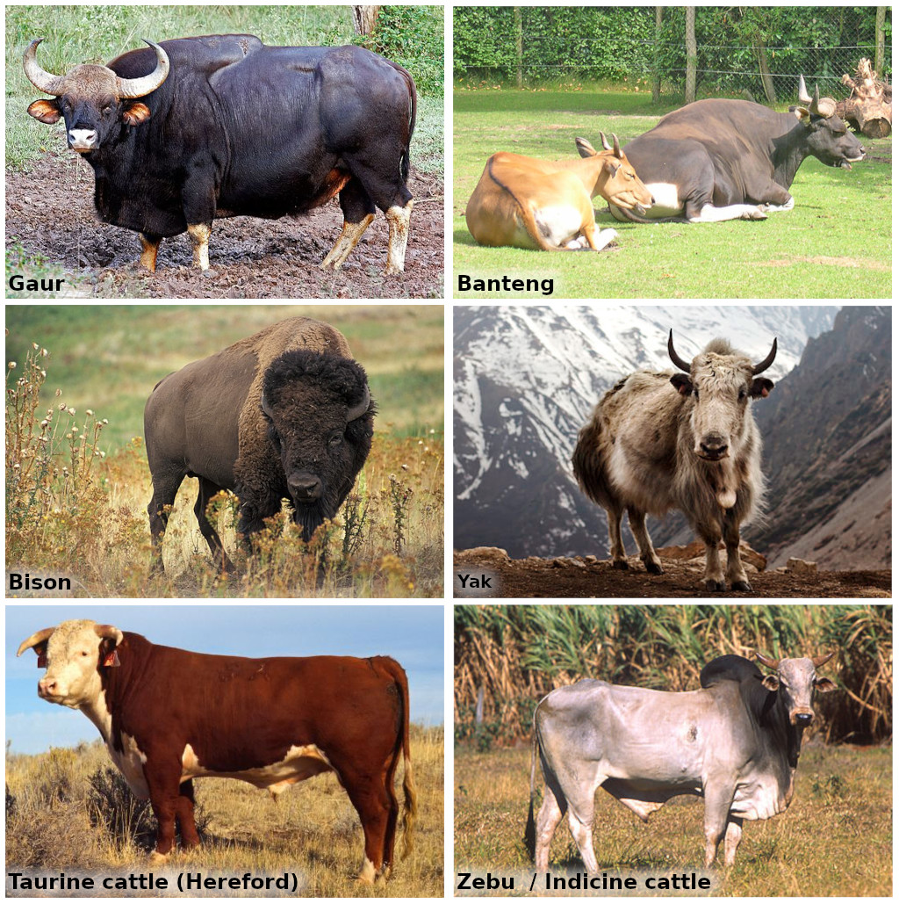

Bovine pangenomes
Dec 17 2022 literature pangenome bovineBackground on cattle
- Nucleotide diversity is higher in cattle than human populations.
- Pangenome might be even more useful in cattle for that reason.
- The reference genomes is from a highly inbred Hereford cow, one of the most common cattle in many countries.
- A typical B. taurus genome differs from that reference by ~7-8M SNPs/INDELs.
- Genome size ~2.76Gb
- 29 autosomes + X/Y
- Draft in 2004
- Latest version is ARS-UCD1.2
- Bovine autosomes are acrocentric.
- The Bovine Pangenome Consortium (BPC) aims at producing high-quality haplotype-resolved genome assemblies for the bovid species.
Different bovine species

- Banteng (*Bos javanicus*) south-east Asian cattle
/ - Gaur (*Bos gaurus*) Indian bison
|
/ \ - Yak (*Bos grunniens*)
| - American Bison (*Bison Bison*)
|
\ -European Bison (*Bison bonasus*)
/
\ - Taurine cattle (*Bos taurus*)
- Zebu/indicine cattle (*Bos indicus*)Others:
Bovine breed-specific augmented reference graphs facilitate accurate sequence read mapping and unbiased variant discovery
Crysnanto and Pausch (2019) made a pangenome from SNPs/INDELs catalogs and showed that this pangenomic reference helps with mapping short reads and genotyping. This is the first study that shows that in large genomes other than human. Similar to some previous studies, they see that it helps to select variants based on their frequencies, when deciding which ones to include in the pangenome.
Breed-specific pangenomes result in better mapping when studying a sample from that breed. The global pangenome was the second best, producing slightly more mapping errors. Of note, both the breed-specific and global pangenome performed better than modified linear reference containing the major allele for that breed or the whole population. Pangenome did increase the mapping ambiguity a bit, which was visible with slightly less uniquely mapped reads
Regarding variant-oriented analysis, the allelic support was closer to 0.5 for heterozygous variants, esp. INDELs, with pangenomes compared to linear references.
Methods:
- Genotypes from 288 cattle
- vg to construct the pangenome (
vg construct) and map short reads (vg map). - Genotyping performed on the surjected BAMs (
vg surject) using GATK, Graphtyped, and SAMtools. - Breed-specific pangenomes using breed-specific allele frequency thresholds (>0.03).
- Multiple experiments restricted to chromosome 25.
- Mapping accuracy using simulations.
Graph construction method impacts variation representation and analyses in a bovine super-pangenome
Leonard, Crysnanto, Mapel, et al. (2022) experimented with different pangenome construction methods (pggb, cactus, minigraph) and observed differences in the variants represented by the pangenomes.
There was much more variation/non-reference sequence in cactus/PGGB, both because it represents small variation and because it included centromeric repeats assembled by some of the assemblies. 96% of variants discovered from the assembly-based calling are found in the pangenomes. Variation that is private to a construction method is rarely validated (as in called from the assemblies).
Conflicting alleles in the pangenomes were more frequent in cactus graph. I think those are alleles that follow another path than the assembly they came from? Not sure, maybe something vcfwave flags?
When realigning the assemblies, cactus and PGGB had much less alignment difference, as measured by the edit distance, as expected. The differences were also not correlated with divergence from the reference genome, which might make them more suitable to make “super-pangenomes” (i.e. that includes more divergent genomes). Interestingly, alignment of the assemblies with GraphAligner sometimes failed, usually because of exceeded “tangle effort” in complex regions. This happened more for PGGB, and to a smaller extend cactus.
Focusing on VNTR representation, they found that their repeat counts are 90% concordant across pangenomes, but that minigraph can over/underestimate the counts. Cactus VNTR representation were the most similar in term of repeat counts with on genotyping VNTR in HiFi reads (then PGGB, then minigraph). Finally, they correlate those counts with expression of nearby genes. This analysis focuses on one VNTR locus, with two haplotypes tagged by 2 SNPs and an INDEL. Although the VNTR is one of the variants associated the most with gene expression, it’s not the top one which makes me believe the association it mostly due to LD. There are quite a few variants more strongly associated but they still conclude that “These findings suggest that the VNTR haplotype primarily mediates the expression of…”?
They mention the computational resources needed for pangenome construction: minigraph was the fastest to run.; cactus was 34x slower, and PGGB 287x slower. Interestingly, the discussion also calls out for more efficient downstream tools to handle rich pangenomes like the cactus/PGGB ones, and for visualization/annotation tools for these pangenomes.
Methods:
- Hereford reference + 11 haplotype-resolved assembles (inc. indicine cattle, bison, yak, gaur).
- Minigraph with ARS-UCD1.2 as backbone, cactus (reference-free), PGGB.
- Realign assemblies with minigraph to verify that they follow the appropriate path in the pangenome.
- SVs were decomposed into VCFs from each pangenomes and compared together and with assembly-based SV discovery.
- Assembly-based SV discovery with minimap2+paftools.js.
- SV comparison/merging with Jasmine.
- SVs in a pangenome were “validated” if found by the assembly-based SV discovery.
- Also validated from optical mapping, but on different samples though.
- Align 100 Kbp segments of assemblies with GraphAligner to measure edit distance.
- Investigated alleles of VNTR identified in the reference genome.
- Count “validated” with adVNTR (genotyped from HiFi reads).
- Zoom in to a VNTR and its association with expression using 2 SNPs and on INDEL tags.
- 83 bulls
Structural variant-based pangenome construction has low sensitivity to variability of haplotype-resolved bovine assemblies
Leonard, Crysnanto, Fang, et al. (2022) asked: could the type of sequencing technology or assembly method affect the final pangenome constructed? Not a lot according to this study. They constructed bovine pangenomes with ONT and HiFi, different read coverage?, and hifiasm/Shasta assemblers. For each configuration, the pangenome was similar: 92.1% of SVs in common, 0.39-1.8Mb of non-reference sequence unique to a pangenome.
Of note, lower coverage, ~20X HiFi and ~60x ONT, seems to be enough to get a representative pangenome. Low-coverage ONT-Shasta had more SVs though, which are likely false-positives.
They also compute a measure of diversity based on the bubbles shared or not by pairs of assemblies. Similarly looking at the bubbles, they looked at a few known SV loci. Some were present and consistent, others had different copy number representations between pangenomes, others were missed.
Methods:
- 3 bovine trios: taurus x taurus, taurus x indicus, taurus x gaurus.
- 6 haplotype-resolved de novo assemblies.
- Long reads for offspring separated thanks to parental short-reads.
- hifiasm and Shasta to assemble HiFi and ONT reads.
- Pangenome constructed with minigraph using ARS-UCD1.2 as backbone.
- Compare pangenomes from hifiasm, Shasta, or random mixture.
Further reading: pangenome-based GWAS in crops
- Gupta, P. K. Quantitative genetics: pan-genomes, SVs, and k-mers for GWAS. Trends Genet. 37, 868–871 (2021). 2.Hufford, M. B. et al. De novo assembly, annotation, and comparative analysis of 26 diverse maize genomes. Science 373, 655–662 (2021).
- Song, J.-M. et al. Eight high-quality genomes reveal pan-genome architecture and ecotype differentiation of Brassica napus. Nat. Plants 6, 34 (2020).